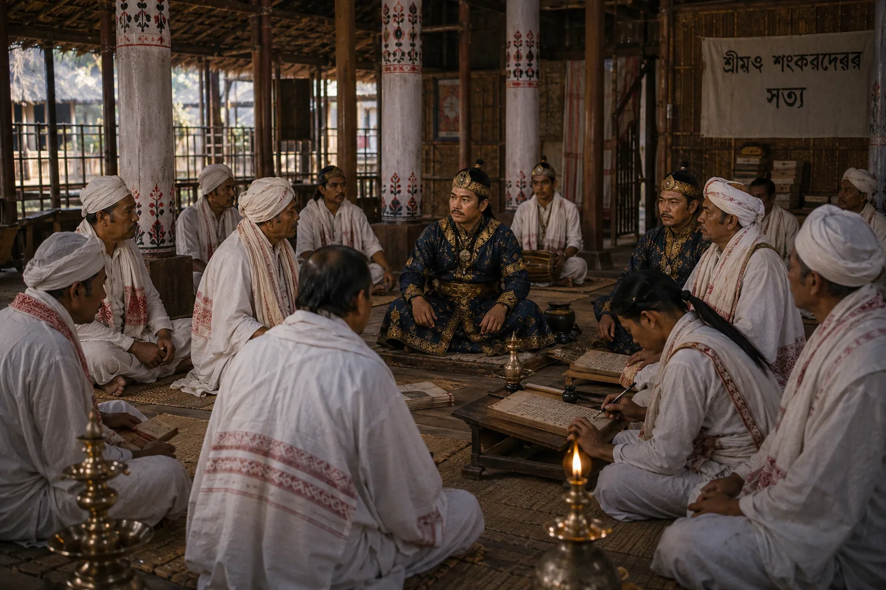

Imperial Conference with Vaishnava Satradhikars
c. 1685 · The Tungkhungia kings

King Gadadhar Singha meets with powerful abbots (Satradhikars), asserting absolute royal authority over monastic wealth and exempt paiks.
Sources have not yet been catalogued for this record.
People: Gadadhar Singha (Supaatphaa)